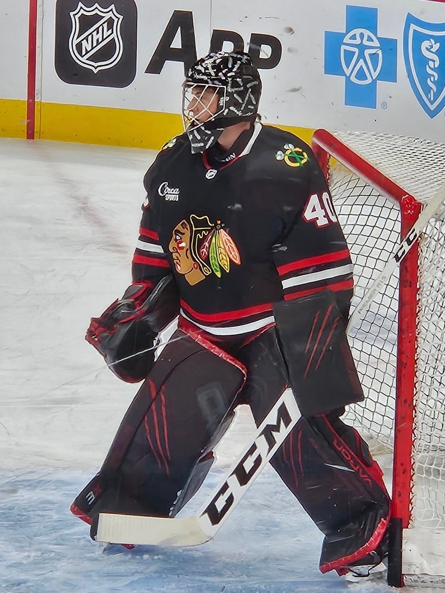
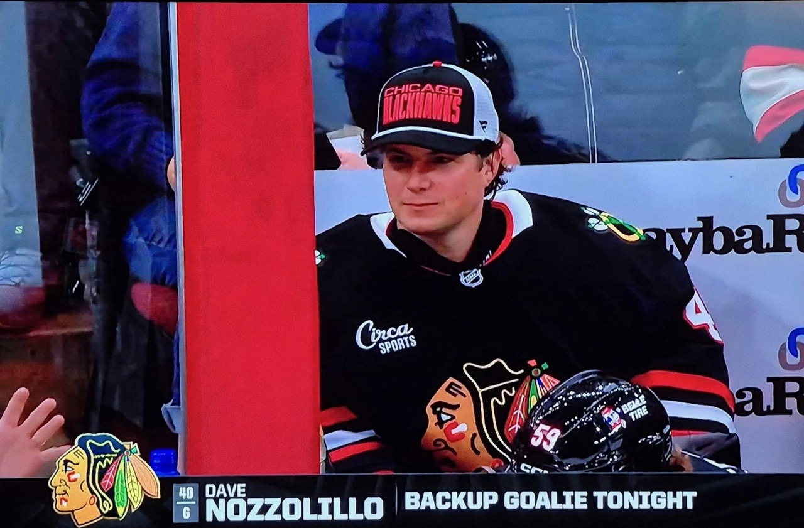
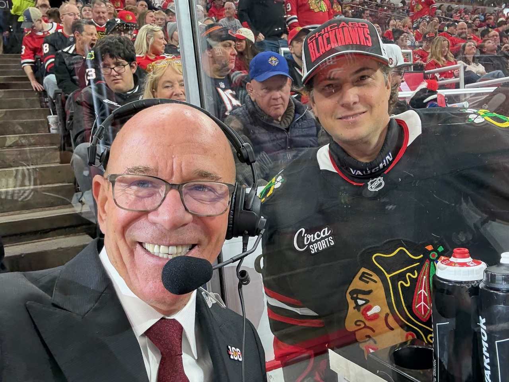

When star center Connor Bedard first donned a Chicago Blackhawks' jersey, he was 18 years old — so young that he was three years away from legally drinking a beer.
When hockey beer-league goalie David Nozzolillo pulled on a Blackhawks' jersey earlier this year, he was 45 — old enough to have forged a career at Wintrust Bank in Orland Park and serve on its executive team.
Only 2½ hours before gametime on Jan. 9, Nozzolillo's phone rang. Flu had upended the Blackhawks' locker room; goalies Arvid Soderblom and Spencer Knight were sick and unavailable to play against the Washington Capitals, whose star Alex Ovechkin is the leading goal scorer in NHL history. From their Rockford affiliate, the Blackhawks brought in goalie Drew Commesso to start, but they needed an emergency backup goalie in case he was injured — or was also knocked out by the flu.
What, exactly, is an emergency backup goalie? As Emily Kaplan wrote on ESPN.com, they "are one of the NHL's most unusual quirks. They allow for a made-for-Disney moment as Regular Joes suit up for the best professional hockey league in the world."
A 2003 Lake Forest College graduate who served as a backup goalie for the Foresters, Nozzolillo had already been on call to show up that night, where he was slated to earn $100 to sit in the United Center stands. He expected to leave for the stadium around 5:45 p.m. with almost no chance to dress for the game.
“My heart started racing after the call. I wasn't quite ready yet,” said Nozzolillo, who shared his thoughts before a recent LFC alumni hockey game. “I had to throw my wet stuff in the dryer for five minutes. I threw my bag in the truck. I'm texting my brothers and called my Dad. I got a text halfway there about how to spell my last name for the jersey.”
Nozzolillo arrived at the United Center in 30 minutes. He signed an amateur contract that paid him nothing. He didn't even have time for a pre-game meal; his last one had been lunch at Hooters many hours earlier.
“I got to the locker-room, and it was a whirlwind,” said Nozzolillo, whose wife was invited to the game by the team. “A bunch of guys came up and introduced themselves. The equipment manager asked me if I wanted my skates sharpened.”

Four years earlier, a buddy mentioned Nozzolillo — who plays goalie twice a week at Johnny's Icehouse near the United Center — to a Blackhawks' representative. He later got a call from Meghan Hunter, the team's executive assistant to the senior vice president/general manager. He was hired without a tryout as one of four emergency backup goalies.
“They knew I had played downtown,” Nozzolillo explained about not needing to showcase his skills.
On occasion, Nozzolillo had been asked to play goalie to take shots at the United Center from an injured player who was rehabilitating, such as Jonathan Toews. He had suited up halfway for games three times before January, but he had been relegated to the locker room — not only of the Blackhawks, but one time of the Dallas Stars, as backup goalies can play for either team.
“It was a little less glamorous for Dallas,” said Nozzolillo, who was born in Canada. “In the visitors' locker room, in the area I sat, there's just the game clock in there. You can't even see the game. At least the Hawks locker-room has a lounge and three TVs and you're sitting on leather couches talking to some of the guys.”
During pregame warmups, Nozzolillo saw former Blackhawks' goalie Darren Pang, now a TV commentator. He had been introduced to him three months earlier by former Blackhawks star defenseman Chris Chelios.
“When I met him, I said, 'We small guys still have a shot,'” said the 5-foot-10 Nozzolillo to the 5-foot-5 Pang. “I skated over to him on the ice, and I said the same thing. He said he'd give me a shoutout during the game. My phone blew up after the game about the clip on TV.”

Though he ended up sitting on the bench during the January game, a 5-1 Blackhawks' loss, Nozzolillo saw plenty of action in pregame warmups — more than he should have, as he was supposed to leave the net at one point and let players shoot on an empty goal. “I wanted to get some pucks,” Nozzolillo said. “You've got 10 guys coming down firing at you.”
Had he played, Nozzolillo would have been the oldest emergency backup goalie in NHL history. Instead, his short career has likely ended. During the 2026-2027 season, the NHL will require a third goalie to travel with the team for emergencies, pretty much ending the decade-long experiment of having a handful of emergency backup goaltenders on call.
“It's so unique to be able to take a guy off the street who's not a pro to play,” said Nozzolillo, who received a practice puck and a game puck and is awaiting the No. 40 jersey he wore. “It was a once-in-a-lifetime experience.”
Back to Bedard. In 2023, when Nozzolillo sat in the home team's locker room for the first time as the emergency backup, he was given uniform number 98. That wasn't available this time: it's the future Hall of Famer's number. Noted Nozzolillo, “I joked with Bedard that I wore his number.”
This article originally appeared on Lake Forest Love.
The Sporting Life Columnist David A. F. Sweet can be reached at dafsweet@aol.com.